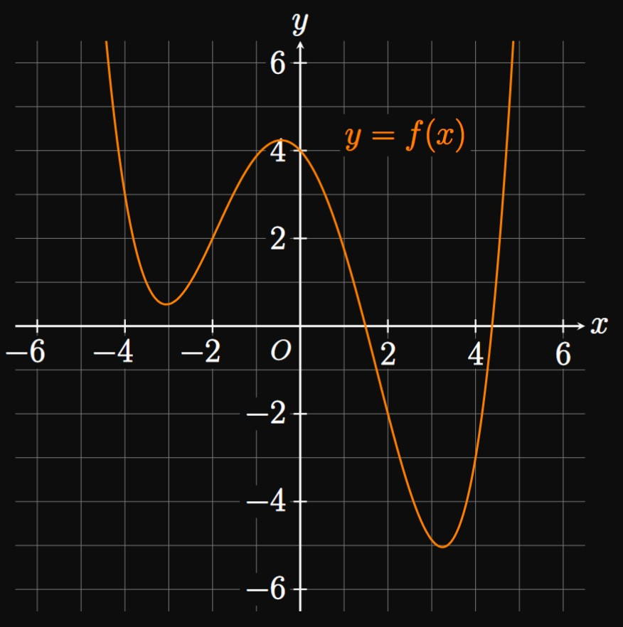

\(\ds \int_0^4 \cos \sqrt x \di x\) using a
left-endpoint approximation with \(n = 3\)
estimate the integral using the
specified approximation method.
SOLUTION
We split \([0, 4]\) into three subintervals of equal width
\[\Delta x = \frac{4 - 0}{3} = \frac{4}{3} \pd \]
These subintervals are
\(\parbr{0, \tfrac{4}{3}},\)
\(\parbr{\tfrac{4}{3}, \tfrac{8}{3}},\)
and \(\parbr{\tfrac{8}{3}, 4}.\)
We sample the function \(\cos \sqrt x\)
at the left endpoint of each subinterval;
doing so gives the following approximation:
\[
\ba
\int_0^4 \cos \sqrt x \di x
&\approx L_3 \nl
&= \par{\cos \sqrt 0 + \cos \sqrt{\frac{4}{3}} + \cos \sqrt{\frac{8}{3}}} \par{\frac{4}{3}} \nl
&\approx \boxed{1.78938}
\ea
\]
(This procedure is a review of our discussion in Section
4.2.)
EXERCISE 2
For
\(\ds \int_{-4}^2 \par{t^2 - 2} \di t\)
using a right-endpoint approximation with \(n = 6\)
estimate the integral using the
specified approximation method.
SOLUTION
We split \([-4, 2]\) into six subintervals of equal width
\[\Delta t = \frac{2 - (-4)}{6} = 1 \pd\]
So our subintervals are \([-4, -3],\) \([-3, -2],\)
\(\dots, [1, 2].\)
We evaluate the function at the right endpoint of each subinterval;
doing so gives the approximation
\[
\ba
\int_{-4}^2 \par{t^2 - 2} \di t
&\approx R_6 \nl
&= \Big([(-3)^2 - 2] + [(-2)^2 - 2] + [(-1)^2 - 2] + [(0)^2 - 2] \nl
&\lspace \, \, + [(1)^2 - 2] + [(2)^2 - 2]\Big) (1) \nl
&= \boxed 7
\ea
\]
(This procedure is a review of our discussion in Section
4.2.)
EXERCISE 3
With \(n\) equal-width subintervals, \(\int_a^b f(x) \di x\)
is estimated to be \(7\) by a left-endpoint approximation
and \(3\) by a right-endpoint approximation.
What does the Midpoint Rule with \(n\) equal-width subintervals estimate the integral to be?
SOLUTION
The Midpoint Rule approximation is the average of the endpoint approximations—namely,
\[\frac{7 + 3}{2} = \boxed 5\]
(This fact is only true if \(n\) is the same.)
EXERCISE 4
Let \(f\) be a decreasing function on \([a, b].\)
If \(L_n\) is a left-endpoint approximation
and \(R_n\) is a right-endpoint approximation
for \(\int_a^b f(x) \di x,\)
then bound \(\int_a^b f(x) \di x\) between these estimates.
SOLUTION
Since \(f\) is decreasing on \([a, b],\)
the left-endpoint approximation is an overestimate
and the right-endpoint approximation is an underestimate.
We therefore have
\[\boxed{R_n \leq \int_a^b f(x) \di x \leq L_n}\]
EXERCISE 5
Function \(g\) is increasing on \([a, b].\)
The definite integral \(\int_a^b g(x) \di x\)
is approximated by a right-endpoint approximation \(R_n,\)
and the error \(E_n\) in the approximation satisfies \(\abs{E_n} \leq K.\)
Construct an interval in which the true value of \(\int_a^b g(x) \di x\)
must lie.
SOLUTION
Because \(g\) is increasing on \([a, b],\)
the right-endpoint approximation \(R_n\)
is an overestimate of the true value of \(\int_a^b g(x) \di x.\)
The approximation \(R_n\) can differ from \(\int_a^b g(x) \di x\)
by no more than \(K.\)
So the integral's true value must lie between \(R_n\) and \(R_n + K;\)
that is,
\[\boxed{R_n \leq \int_a^b g(x) \di x \leq R_n + K}\]
EXERCISE 6
For
\[\ds \int_{-1}^2 \frac{1}{2x^2 + 3} \di x \scoll n = 3\]
apply the Midpoint Rule to approximate
the integral using \(n\) equal-width subintervals.
SOLUTION
Each subinterval has equal width
\[\Delta x = \frac{2 - (-1)}{3} = 1 \pd\]
Our subintervals are therefore \([-1, 0],\) \([0, 1],\)
and \([1, 2].\)
We evaluate the function \(1/\par{2x^2 + 3}\) at the midpoint \(\overline x_i\) of each subinterval;
the Midpoint Rule therefore gives
\[
\ba
\int_{-1}^2 \frac{1}{2x^2 + 3} \di x
&\approx M_3 = \sum_{i = 1}^3 \frac{1}{2 \overline{x}_i^2 + 3} \Delta x \nl
&= \parbr{\frac{1}{2(-0.5)^2 + 3} + \frac{1}{2(0.5)^2 + 3} + \frac{1}{2(1.5)^2 + 3}} (1) \nl
&\approx \boxed{0.70476}
\ea
\]
The true value of the integral is roughly \(0.69649,\) so our approximation was decent
(since we only used a few terms).
EXERCISE 7
For
\[\ds \int_1^9 \frac{3}{x^2} \di x \scoll n = 4\]
apply the Midpoint Rule to approximate
the integral using \(n\) equal-width subintervals.
SOLUTION
Each subinterval has equal width
\[\Delta x = \frac{9 - 1}{4} = 2 \pd\]
Our subintervals are therefore \([1, 3],\) \([3, 5],\)
\([5, 7],\) and \([7, 9].\)
We evaluate the function \(3/x^2\) at the midpoint \(\overline x_i\) of each subinterval;
the Midpoint Rule therefore gives
\[
\ba
\int_1^9 \frac{3}{x^2} \di x
&\approx M_4 = \sum_{i = 1}^4 \frac{3}{{\overline x_i}^2} \Delta x \nl
&= \parbr{\frac{3}{2^2} + \frac{3}{4^2} + \frac{3}{6^2} + \frac{3}{8^2}} (2) \nl
&\approx \boxed{2.13542}
\ea
\]
The true value of the integral is \(8/3\) \(\approx 2.66667.\)
Because \(\Delta x\) was large, our approximation wasn't close to the exact value.
EXERCISE 8
For
\[\ds \int_{-4}^0 e^{x} \di x \scoll n = 8\]
apply the Midpoint Rule to approximate
the integral using \(n\) equal-width subintervals.
SOLUTION
We split \([-4, 0]\) into eight subintervals of equal width
\[\Delta x = \frac{0 - (-4)}{8} = 0.5 \pd\]
The subintervals are \([-4, -3.5],\) \([-3.5, -3],\)
\(\dots, [-0.5, 0].\)
Evaluating the function at the midpoint of each subinterval,
we approximate \(\int_{-4}^0 e^{x} \di x\) to be
\[
\ba
M_8 &= \sum_{i = 1}^8 e^{\overline x_i} \nl
&= \par{e^{-3.75} + e^{-3.25} + e^{-2.75} + e^{-2.25} + e^{-1.75} + e^{-1.25} + e^{-0.75} + e^{-0.25}} (0.5) \nl
&\approx \boxed{0.97153}
\ea
\]
The true value of the integral is \(1 - e^{-4}\) \(\approx 0.98168.\)
Not bad!
EXERCISE 9
For
\[\ds \int_2^6 \frac{4}{3x + 5} \di x \scoll n = 8\]
apply the Trapezoidal Rule to approximate the integral
using \(n\) subintervals of equal width.
SOLUTION
Each subinterval has equal width
\[\Delta x = \frac{6 - 2}{8} = 0.5 \pd\]
The Trapezoidal Rule therefore gives the approximation
\[
\ba
\int_2^6 \frac{4}{3x + 5} \di x &\approx T_8 \nl
&= \frac{0.5}{2}
\Big(\frac{4}{3(2) + 5} + \frac{8}{3(2.5) + 5} + \frac{8}{3(3) + 5} + \frac{8}{3(3.5) + 5} \nl
&\lspace + \frac{8}{3(4) + 5} + \frac{8}{3(4.5) + 5} + \frac{8}{3(5) + 5} \nl
&\lspace + \frac{8}{3(5.5) + 5}
+ \frac{4}{3(6) + 5}\Big) \nl
&\approx \boxed{0.98506}
\ea
\]
The true value of the integral is \(\tfrac{4}{3} \ln \tfrac{23}{11}\) \(\approx 0.98347.\)
Our approximation came close!
EXERCISE 10
For
\[\ds \int_0^2 \par{x - 2x^3} \di x \scoll n = 5\]
apply the Trapezoidal Rule to approximate the integral
using \(n\) subintervals of equal width.
SOLUTION
Each subinterval has equal width
\[\Delta x = \frac{2 - 0}{5} = 0.4 \pd\]
The Trapezoidal Rule therefore gives the approximation
\[
\ba
\int_0^2 \par{x - 2x^3} \di x &\approx T_5 \nl
&= \frac{0.4}{2}
\Big(
\parbr{(0) - 2(0)^3} + 2 \parbr{(0.4) - 2(0.4)^3}
+ 2 \parbr{(0.8) - 2(0.8)^3}
\nl
&\lspace+ 2 \parbr{(1.2) - 2(1.2)^3}
+ 2 \parbr{(1.6) - 2(1.6)^3}
+ \parbr{(2) - 2(2)^3}
\Big) \nl
&= \boxed{-6.32}
\ea
\]
The true value of the integral is \(-6,\)
which is fairly close to our approximation \(T_5 = -6.32.\)
EXERCISE 11
For
\[\ds \int_0^{\pi} \sqrt{\sin \theta} \di \theta \scoll n =4\]
apply the Trapezoidal Rule to approximate the integral
using \(n\) subintervals of equal width.
SOLUTION
Each subinterval has equal width \(\Delta \theta = \pi/4.\)
So we use the Trapezoidal Rule to attain the following approximation:
\[
\ba
\int_0^{\pi} \sqrt{\sin \theta} \di \theta
&\approx T_4 \nl
&= \frac{\pi/4}{2} \par{ \sqrt{\sin 0} + 2 \sqrt{\sin \frac{\pi}{4}} + 2 \sqrt{\sin \frac{\pi}{2}} + 2 \sqrt{\sin \frac{3 \pi}{4}} + \sqrt{\sin \pi}} \nl
&= \frac{\pi}{4} \par{0 + \frac{1}{\sqrt[4]{2}} + 1 + \frac{1}{\sqrt[4]{2}} + 0} \nl
&= \boxed{\frac{\pi}{4} \par{1 + 2^{3/4}}} \approx 2.10628 \pd
\ea
\]
(The integral's exact value is roughly \(2.39628.\))
apply the Trapezoidal Rule to approximate the integral
using \(n\) subintervals of equal width.
SOLUTION
Each subinterval has equal width
\[\Delta \theta = \frac{2 \pi - 0}{6} = \frac{\pi}{3} \pd \]
We therefore have
\[
\ba
\int_0^{2 \pi} \cos^3 \theta \di \theta
&\approx T_6 \nl
&= \frac{\pi/3}{2} \Big(\cos^3 0 + 2 \cos^3 \frac{\pi}{3} + 2 \cos^3 \frac{2 \pi}{3} \nl
&\lspace + 2 \cos^3 \frac{3 \pi}{3} + 2 \cos^3 \frac{4 \pi}{3} \nl
&\lspace + 2 \cos^3 \frac{5 \pi}{3} + \cos^3 \frac{6 \pi}{3} \Big) \nl
&= \frac{\pi}{6} (0) = \boxed 0
\ea
\]
The integral \(\int_0^{2 \pi} \cos^3 \theta \di \theta\) truly does equal \(0.\)
The Trapezoidal Rule produced an exact answer!
EXERCISE 13
For
\[\ds \int_0^1 e^{x^3} \di x \scoll n = 4\]
approximate the integral using Simpson's Rule
with \(n\) subintervals.
SOLUTION
With \(n = 4\) each subinterval has width
\[\Delta x = \frac{1 - 0}{4} = 0.25 \pd\]
Hence, using Simpson's Rule gives
\[
\ba
\int_0^1 e^{x^3} \di x &\approx S_4 \nl
&= \frac{0.25}{3} \parbr{e^{0^3} + 4 e^{0.25^3} + 2 e^{0.5^3} + 4 e^{0.75^3} + e^{1^3}} \nl
&\approx \boxed{1.34557}
\ea
\]
The integral's true value is roughly \(1.34190.\)
With only a few terms, Simpson's Rule provided an excellent approximation.
EXERCISE 14
For
\[\ds \int_1^4 \frac{1}{x^2 + 2} \di x \scoll n = 6\]
approximate the integral using Simpson's Rule
with \(n\) subintervals.
SOLUTION
With \(n = 6\) each subinterval has width
\[\Delta x = \frac{4 - 1}{6} = 0.5 \pd \]
Hence, using Simpson's Rule gives
\[
\ba
\int_1^4 \frac{1}{x^2 + 2} \di x &\approx S_6 \nl
&= \frac{0.5}{3} \Big[\frac{1}{(1)^2 + 2} + \frac{4}{(1.5)^2 + 2} + \frac{2}{(2)^2 + 2} + \frac{4}{(2.5)^2 + 2} \nl
&\lspace \; \; \; \, + \frac{2}{(3)^2 + 2} + \frac{4}{(3.5)^2 + 2} + \frac{1}{(4)^2 + 2} \Big] \nl
&\approx \boxed{0.43513}
\ea
\]
The integral's true value is approximately \(0.43521\)—very close!
EXERCISE 15
For
\[\ds \int_0^8 \sqrt{t^3 + 1} \di t \scoll n = 8\]
approximate the integral using Simpson's Rule
with \(n\) subintervals.
A particle travels along a straight line
with time \(t\) (measured in seconds) as modeled by the velocity function
\(v(t),\) measured in meters per second.
The particle's acceleration is positive for all \(0 \leq t \leq 4.\)
Selected values of \(t\) and \(v(t)\) are shown in the following table.
Using a left-endpoint approximation
with the given subintervals,
estimate the particle's displacement
over \(0 \leq t \leq 4.\)
Does this estimate underestimate or overestimate the particle's true displacement?
\(t\)
\(0\)
\(1\)
\(2\)
\(3\)
\(4\)
\(v(t)\)
\(3\)
\(5\)
\(7\)
\(8\)
\(13\)
SOLUTION
The particle's displacement on \(0 \leq t \leq 4\)
is \(\int_0^4 v(t) \di t.\)
In a left Riemann sum, we use the left endpoint of each subinterval
\([0, 1],\) \([1, 2],\) \([2, 3],\) and \([3, 4].\)
Observe that \(\Delta t = 1.\)
So we approximate the displacement to be
\[
L_4
= (3 + 5 + 7 + 8)(1) = \boxed{23 \un{m}}
\]
Since the particle is accelerating on \(0 \leq t \leq 4,\)
the velocity function \(v(t)\) is increasing on this interval.
So this left-endpoint approximation underestimates the true displacement.
EXERCISE 19
Water is pumped into a pool
with time as given by the continuous rate function \(f(t),\)
where \(f(t)\) is measured in milliliters per second and \(t\)
is measured in seconds after the pumping begins.
Selected values of \(t\) and \(f(t)\) are provided by the following table.
Using a trapezoidal approximation with the given subintervals,
estimate the total volume of water that is pumped into the pool
over \(1 \leq t \leq 8.\)
\(t\)
\(1\)
\(2\)
\(5\)
\(8\)
\(f(t)\)
\(4\)
\(6\)
\(1\)
\(7\)
SOLUTION
The total volume of water pumped in is given by \(\int_1^8 f(t) \di t.\)
Because the subintervals in the table don't have equal widths,
we apply the Trapezoidal Rule individually on each subinterval.
Doing so gives
\[
\ba
\int_1^8 f(t) \di t
&\approx
\tfrac{1}{2} [f(1) + f(2)] (2 - 1)
+ \tfrac{1}{2} [f(2) + f(5)] (5 - 2)
+ \tfrac{1}{2} [f(5) + f(8)] (8 - 5) \nl
&= \tfrac{1}{2} (4 + 6)(1)
+ \tfrac{1}{2} (6 + 1)(3)
+ \tfrac{1}{2} (1 + 7)(3) \nl
&= \boxed{27.5 \un{mL}}
\ea
\]
EXERCISE 20
The following table shows the power output
of a power plant measured every \(6\) hours.
Use Simpson's Rule to approximate the total energy
supplied throughout the entire day.
Time
\(12\) am
\(6\) am
\(12\) pm
\(6\) pm
Power Output (Megawatts)
\(80\)
\(110\)
\(120\)
\(90\)
SOLUTION
The total energy output is given by the integral of the power output function
throughout the entire day.
(The derivative of energy with respect to time is power.)
With \(\Delta t = 6,\)
Simpson's Rule provides the following approximation for energy delivered throughout the day:
\[\frac{6}{3} [80 + 4(110) + 2(120) + 90] = \boxed{1700 \un{MWh}}\]
(Note: \(\un{MWh}\) is the unit for megawatt-hour.)
EXERCISE 21
In Figure 10,
use Simpson's Rule with \(n = 4\) to approximate \(\int_{-4}^4 f(x) \di x.\)

SOLUTION
Observe that \(f(-4) = 3,\)
\(f(-2) = 2,\) \(f(0) = 4,\)
\(f(2) = -2,\) and \(f(4) = -3.\)
Using \(n = 4\) implies \(\Delta x = 2.\)
So Simpson's Rule gives
\[
\ba
\int_{-4}^4 f(x) \di x
&\approx S_4 \nl
&= \frac{2}{3} \parbr{3 + 4(2) + 2(4) + 4(-2) + (-3)} \nl
&= \boxed{\frac{16}{3}}
\ea
\]
EXERCISE 22
In Figure 11,
use the Trapezoidal Rule with \(n = 4\) to approximate \(\int_{-3}^1 g(x) \di x.\)
SOLUTION
Observe that \(g(-3) = 3,\)
\(g(-2) = -2,\) \(g(-1) = 1,\)
\(g(0) = -1,\) and \(g(1) = 4.\)
Using \(n = 4\) implies \(\Delta x = 1.\)
So the Trapezoidal Rule gives
\[
\ba
\int_{-3}^1 g(x) \di x
&\approx T_4 \nl
&= \frac{1}{2} \parbr{3 + 2(-2) + 2(1) + 2(-1) + 4} \nl
&= \boxed{\frac{3}{2}}
\ea
\]
EXERCISE 23
Use the Trapezoidal Rule with \(n = 4\) to estimate the area under \(y = \ln x\)
from \(x = 1\) to \(x = 3.\)
SOLUTION
We cut the interval \([1, 3]\) into four equal-size subintervals:
\([1, 1.5],\) \([1.5, 2],\) \([2, 2.5],\) and \([2.5, 3].\)
So \(\Delta x = 0.5.\)
The area is given by \(\int_1^3 \ln x \di x,\)
which we approximate using the Trapezoidal Rule as
\[
\ba
S_4 &= \frac{0.5}{2} \parbr{\ln 1 + 2 \ln 1.5 + 2 \ln 2 + 2 \ln 2.5 + \ln 3} \nl
&\approx \boxed{1.28210}
\ea
\]
The true value of the area is \(3 \ln 3 - 2\) \(\approx 1.29584\)—not far off.
(In Section 6.1
you'll learn to antidifferentiate \(\ln x\) and find the exact answer.)
EXERCISE 24
Use a left-endpoint approximation with \(n = 2\) to estimate the area under
\(y = 1 + \atan x\) from \(x = 0\) to \(x = 2.\)
Then calculate an error bound for the approximation.
Determine whether the approximation is an underestimate or overestimate;
accordingly, construct an interval in which the true value of the area must lie.
SOLUTION
We split \([0, 2]\) into two equal-size subintervals:
\([0, 1]\) and \([1, 2].\)
We therefore see \(\Delta x = 1.\)
The area is given by \(\int_0^1 \par{1 + \atan x} \di x.\)
Evaluating \(y = 1 + \atan x\) at the left endpoint of each subinterval,
we approximate the integral to be
\[
\ba
L_2 &= \parbr{(1 + \atan 0) + (1 + \atan 1)} (1) \nl
&= 2 + \frac{\pi}{4} \approx 2.78540 \pd
\ea
\]
This approximation is an underestimate because \(y = 1 + \atan x\)
is increasing on \(0 \leq x \leq 2.\)
If \(f(x) = 1 + \atan x,\) then \(f'(x) = 1/\par{x^2 + 1}.\)
The maximum value of \(\abs{f'}\) on \([0, 2]\) is \(\abs{f'(0)} = 1.\)
The error \(E_2\) in the approximation therefore satisfies
\[
\abs{E_2} \leq \frac{1(2 - 0)^2}{2(2)} = 1 \pd
\]
Hence, our approximation of \(L_2 = 2 + \pi/4\)
differs from the true value of \(\int_0^1 \par{1 + \atan x} \di x\)
by no more than \(1.\)
Since our approximation is an underestimate,
\(\int_0^1 \par{1 + \atan x} \di x\)
must lie between the numbers \(L_2\) and \(L_2 + E_2.\)
Mathematically, we have
\[
\boxed{2 + \frac{\pi}{4} \leq \int_0^1 \par{1 + \atan x} \di x \leq 3 + \frac{\pi}{4}}
\]
Using decimals, we bound the integral \(\int_0^1 \par{1 + \atan x} \di x\)
to be in \([2.78540, 3.78540].\)
It turns out the integral equals roughly \(3.40958,\)
which is indeed captured in this interval.
Sadly, our estimate of \(L_2 \approx 2.78540\)
didn't come close, mainly due to the small \(n.\)
EXERCISE 25
Use the Midpoint Rule with \(n = 3\) to approximate \(\int_0^1 e^{x^2} \di x.\)
Then find a number \(K\) such that
\[\abs{\int_0^1 e^{x^2} \di x - M_3} \leq K \pd \]
SOLUTION
We split \([0, 1]\) into three subintervals of equal width \(\Delta x = 1/3.\)
In each subinterval we evaluate \(e^{x^2}\) at the midpoint.
Doing so, we attain the following approximation:
\[
\ba
\int_0^1 e^{x^2} \di x &\approx M_3 \nl
&= \par{e^{(1/6)^2} + e^{(1/2)^2} + e^{(5/6)^2}} \par{\frac{1}{3}} \nl
&\approx \boxed{1.43826}
\ea
\]
The number \(K\) is an error bound to the approximation.
If \(f(x) = e^{x^2},\) then \(f'(x) = 2x e^{x^2}\) and
\[f''(x) = 2 e^{x^2} + 4x^2 e^{x^2} \pd\]
The maximum value of \(\abs{f''}\) on \([0, 1]\) is
\[\abs{f''(1)} = 2e^{1^2} + 4(1)^2 e^{1^2} = 6e \pd\]
Hence, the error bound is given by
\[
\abs{E_3} \leq \frac{6e (1 - 0)^3}{24(3)^2} = \underbrace{\boxed{\frac{e}{36}}}_K
\]
EXERCISE 26
Let \(k\) and \(m\) be positive numbers.
Show that with \(n\) subintervals, an endpoint approximation
estimates
\(\int_m^{2m} \par{1/x^k} \di x\)
with an error bound given by
\[
\abs{E_n} \leq \frac{k}{2n m^{k - 1}} \pd
\]
SOLUTION
If \(f(x) = 1/x^k,\) then we have
\[f'(x) = -kx^{-k - 1} = -\frac{k}{x^{k + 1}} \pd\]
The maximum value of \(\abs{f'(x)} = k/x^{k + 1}\)
on \([m, 2m]\) is
\[\abs{f'(m)} = \frac{k}{m^{k + 1}} \pd\]
[Note that \(\abs{f'(m)}\) is large when the denominator is small,
so \(x = m\) minimizes the denominator over our interval.]
So the error bound in the endpoint approximation is
\[
\abs{E_n} \leq \frac{\ds \par{\frac{k}{m^{k + 1}}} (2m - m)^2}{2n}
= \frac{\ds \par{\frac{k}{m^{k + 1}}} m^2}{2n}
= \frac{k}{2n m^{k - 1}} \cma
\]
as requested.
EXERCISE 27
Use the Trapezoidal Rule with \(n = 6\) to approximate \(\int_1^{8} e^{1/x} \di x.\)
Then calculate and interpret the error bound in the approximation.
SOLUTION
We split \([1, 8]\) into six equal-width subintervals with
\[\Delta x = \frac{8 - 1}{6} = \frac{7}{6} \pd\]
Hence, we approximate the integral to be
\[
\ba
T_6 &=
\frac{7/6}{2} \Big[e^{1/1} + 2 e^{1/(13/6)} + 2 e^{1/(20/6)} + 2 e^{1/(27/6)} \nl
&\lspace + 2 e^{1/(34/6)} + 2 e^{1/(41/6)} + e^{1/(48/6)} \Big] \nl
&\approx \boxed{9.87178}
\ea
\]
If \(f(x) = e^{1/x},\) then \(f'(x) = -\par{e^{1/x}}/x^2\) and
\[
\ba
f''(x) &= -\frac{\ds \par{-\frac{e^{1/x}}{x^2}} \par{x^2} - \par{2x} e^{1/x}}{\par{x^2}^2} \nl
&= \frac{e^{1/x} + 2x e^{1/x}}{x^4} \nl
&= \frac{(2x + 1) e^{1/x}}{x^4} \pd
\ea
\]
The maximum of \(\abs{f''}\) on \([1, 8]\) is
\[\abs{f''(1)} = \frac{[2(1) + 1] e^{1/1}}{(1)^4} = 3e \pd\]
(We know that the maximum occurs when \(x = 1\) because the terms \(e^{1/x}\) and \(1/x^4\) cause
\(f''\) to decay as \(x\) is increased.)
Hence, the error bound is given by
\[
\ba
\abs{E_6} \leq \frac{(3e) (8 - 1)^3}{12(6)^2} = \boxed{\frac{343 e}{144}} \approx 6.47480 \pd
\ea
\]
So our estimate of \(T_6 = 9.87178\) must differ from the true value of \(\int_1^8 e^{1/x} \di x\)
by no more than \(6.47480.\)
EXERCISE 28
Prove that the Trapezoidal Rule and Midpoint Rule
always provide exact estimates to \(\int_a^b f(x) \di x\)
if \(f\) is linear.
SOLUTION
An approximation is exact if and only if the error equals \(0\)
for any positive integer \(n.\)
A linear function is of the form
\[f(x) = Ax + B \pd\]
Observe that \(f'(x) = A\) and \(f''(x) = 0.\)
The error bound in the Trapezoidal Rule therefore becomes
\[
\abs{E_T} \leq \frac{0(b - a)^3}{12 n^2} = 0 \cma
\]
so the Trapezoidal Rule is exact.
Likewise, the error bound in the Midpoint Rule is
\[
\abs{E_M} \leq \frac{0 (b - a)^3}{24 n^2} = 0 \cma
\]
meaning the Midpoint Rule is also exact.
EXERCISE 29
Prove that Simpson's Rule always provides exact approximations
to definite integrals of cubic functions.
SOLUTION
A cubic function is of the form
\[f(x) = Ax^3 + Bx^2 + Cx + D \pd\]
We want to prove that \(\int_a^b f(x) \di x\)
can be calculated exactly using Simpson's Rule with any even \(n.\)
The error bound to Simpson's Rule is
\[\abs{E_S} \leq \frac{M_4 (b - a)^5}{180 n^4} \cma\]
where \(\abs{f^{(4)}(x)} \leq M_4\) on \([a, b].\)
Simpson's Rule is exact if and only if \(E_S = 0\) for all even \(n.\)
Taking derivatives of \(f,\) we see
\[
\ba
f'(x) &= 3Ax^2 + 2Bx + C \cma \nl
f''(x) &= 6Ax + 2B \cma \nl
f'''(x) &= 6A \cma \nl
f^{(4)}(x) &= 0 \pd
\ea
\]
Since the maximum value of \(\abs{f^{(4)}(x)}\) is always \(0,\)
we have \(M_4 = 0.\)
Hence, \(E_S = 0\) and so the error in Simpson's Rule is \(0\)
for all even \(n.\)
EXERCISE 30
On \([1, 5],\) a function \(f\) satisfies \(\abs{f'(x)} \leq 1/30,\)
\(\abs{f''(x)} \leq 2,\) and \(\abs{f^{(4)}(x)} \leq 90.\)
Find the values of \(n\) such that with \(n\) subintervals,
the following numerical integration methods
each approximate \(\int_1^5 f(x) \di x\) with an error whose magnitude is less than \(0.2 \col\)
an endpoint approximation
the Midpoint Rule
the Trapezoidal Rule
Simpson's Rule (if \(n\) is even)
SOLUTION
Let's find the error bounds to each approximation
and set them to be less than \(0.2.\)
The error in an endpoint approximation satisfies
\[
\abs{E_n} \leq \frac{M_1 (b - a)^2}{2n} \pd
\]
Using \(M_1 = 1/30,\) \(a = 1,\) and \(b = 5\) shows
\[
\abs{E_n} \leq \frac{\frac{1}{30} (5 - 1)^2}{2n}
= \frac{4}{15n} \pd
\]
Setting this error bound to be less than \(0.2,\) we see
\[
\frac{4}{15n} \lt 0.2 \iffArrow n \gt \frac{4}{15(0.2)} \approx 1.333 \cma
\]
which we round up to \(\boxed{n \gt 2}.\)
Using the Midpoint Rule, we have an error bound given by
\[
\abs{E_M} \leq \frac{M_2 (b - a)^3}{24n^2} \pd
\]
Substituting \(M_2 = 2,\) \(a = 1,\) and \(b = 5\) gives
\[
\abs{E_M} \leq \frac{2 (5 - 1)^3}{24 n^2} = \frac{16}{3n^2} \pd
\]
Setting this error bound to be less than \(0.2,\) we get
\[\frac{16}{3n^2} \lt 0.2 \iffArrow n \gt \sqrt{\frac{16}{3(0.2)}} \approx 5.164 \cma\]
which we round up to \(\boxed{n \gt 6}.\)
The Trapezoidal Rule has an error bound given by
\[
\abs{E_M} \leq \frac{M_2 (b - a)^3}{12n^2} \pd
\]
Substituting \(M_2 = 2,\) \(a = 1,\) and \(b = 5\) gives
\[
\abs{E_M} \leq \frac{2 (5 - 1)^3}{12 n^2} = \frac{32}{3n^2} \pd
\]
Setting this error bound to be less than \(0.2,\) we get
\[\frac{32}{3n^2} \lt 0.2 \iffArrow n \gt \sqrt{\frac{32}{3(0.2)}} \approx 7.303 \cma\]
which we round up to \(\boxed{n \gt 8}.\)
Simpson's Rule has an error bound given by
\[
\abs{E_S} \leq \frac{M_4 (b - a)^5}{180n^4} \pd
\]
We substitute \(M_4 = 90,\) \(a = 1,\) and \(b = 5\)
to find
\[\abs{E_S} \leq \frac{90 (5 - 1)^5}{180 n^4} = \frac{512}{n^4} \pd\]
Setting this error bound to be less than \(0.2\) and solving for \(n,\)
we find
\[\frac{512}{n^4} \lt 0.2 \iffArrow n \gt \sqrt[4]{\frac{512}{0.2}} \approx 7.113 \pd\]
Since \(n\) must be even, we round up our answer to \(\boxed{n \gt 8}.\)
In this particular problem, the endpoint approximations provide the most accurate estimates
because the smallest \(n\) is required to attain an error bound of \(0.2.\)
Surprisingly, the Trapezoidal Rule and Simpson's Rule
give the least accurate estimates because the largest \(n\) is needed
to match the same error bound \(0.2.\)
For most functions, we expect Simpson's Rule to provide the most accurate approximation.
But this example shows that exceptions exist,
so there is no best numerical integration method.
(We deliberately made \(M_1\) very small to illustrate this idea.)
EXERCISE 31
Find the minimum value of \(n\)
such that the Trapezoidal Rule approximates \(\int_{-2}^2 \sqrt[3]{2x + 5} \di x\)
with an error whose magnitude is less than \(1/54.\)
SOLUTION
If \(f(x) = \sqrt[3]{2x + 5},\)
then
\[
\ba
f'(x) &= \tfrac{2}{3} (2x + 5)^{-2/3} \cma \nl
f''(x) &= -\tfrac{8}{9} (2x + 5)^{-5/3} \pd
\ea
\]
The maximum value of \(\abs{f''(x)}\) \(= \tfrac{8}{9} (2x + 5)^{-5/3}\)
on \([-2, 2]\) is
\[\abs{f''(-2)} = \tfrac{8}{9} (-4 + 5)^{-5/3} = \tfrac{8}{9} \pd\]
The error bound in the trapezoidal approximation is therefore
\[\abs{E_T} \leq \frac{\par{\tfrac{8}{9}} [2 - (-2)]^3}{12 n^2} = \frac{128}{27 n^2} \pd\]
Setting this expression to be less than \(1/54,\) we attain
\[\frac{128}{27 n^2} \lt \frac{1}{54} \iffArrow \boxed{n \gt 16}\]
EXERCISE 32
Determine the minimum value of \(n\)
such that the Midpoint Rule approximation for
\(\int_{-3}^1 \sqrt{x^2 + 4} \di x\)
is accurate within \(1/12.\)
SOLUTION
If \(f(x) = \sqrt{x^2 + 4},\) then \(f'(x) = x/\sqrt{x^2 + 4}\)
and
\[f''(x) = \frac{4}{\par{x^2 + 4}^{3/2}} \pd\]
The maximum value of \(\abs{f''}\) on \([-3, 1]\) is
\[\abs{f''(0)} = \frac{4}{(0^2 + 4)^{3/2}} = \frac{1}{2} \pd\]
So the error bound for the approximation is given by
\[
\ba
\abs{E_M} \leq \frac{\par{\tfrac{1}{2}} [1 - (-3)]^4}{24 n^2} = \frac{16}{3n^2} \pd
\ea
\]
Setting this expression to be no greater than \(1/12\) shows
\[\frac{16}{3n^2} \leq \frac{1}{12} \iffArrow \boxed{n \geq 8}\]
EXERCISE 33
Let \(f(x) = 1/(x + 3).\)
Determine the minimum value of \(n\) for which Simpsons Rule estimates \(\int_{-1}^2 f(x) \di x\)
with an error whose magnitude is less than \(1/80.\)
SOLUTION
Taking derivatives of \(f,\) we see
\[
\ba
f'(x) &= -\frac{1}{(x + 3)^2} \cma \nl
f''(x) &= \frac{2}{(x + 3)^3} \cma \nl
f'''(x) &= -\frac{6}{(x + 3)^4} \cma \nl
f^{(4)}(x) &= \frac{24}{(x + 3)^5} \pd
\ea
\]
The maximum value of \(\abs{f^{(4)}}\)
on \([-1, 2]\) is
\[\abs{f^{(4)}(-1)} = \frac{24}{(-1 + 3)^5} = \frac{3}{4} \pd\]
The error bound to Simpson's Rule is therefore
\[\abs{E_S} \leq \frac{\par{\tfrac{3}{4}} [2 - (-1)]^5}{180 n^4} = \frac{81}{80 n^4} \pd\]
Setting this expression to be less than \(1/80,\) we find
\[\frac{81}{80 n^4} \lt \frac{1}{80} \iffArrow n \gt \sqrt[4]{81} = 3 \pd\]
But since \(n\) must be even in Simpson's Rule, we round up our answer to \(\boxed{n \gt 4}.\)
EXERCISE 34
Find the values of \(n\) such that Simpson's Rule approximates
\(\int_{\pi/6}^{\pi/3} \tfrac{1}{4} \cos 2x \di x\)
correct to six decimal places.
SOLUTION
If \(f(x) = \tfrac{1}{4} \cos 2x,\)
then \(f^{(4)}(x) = 4 \cos 2x.\)
The maximum value of \(\abs{f^{(4)}}\) on \([\pi/6, \pi/3]\) is
\(2.\)
Hence, the error bound to Simpson's Rule is
\[
\abs{E_S} \leq \frac{(2) \par{\frac{\pi}{3} - \frac{\pi}{6}}^5}{180 n^4}
\approx \frac{4.373 \times 10^{-4}}{n^4} \pd
\]
Setting this expression to be less than \(1 \times 10^{-6}\)
(the threshold for six decimal places of accuracy), we have
\[\frac{4.373 \times 10^{-4}}{n^4} \lt 1 \times 10^{-6} \iffArrow n \gt \sqrt[4]{\frac{4.373 \times 10^{-4}}{1 \times 10^{-6}}}
\approx 4.573 \pd\]
But \(n\) must be even, so we round up our answer to \(\boxed{n \gt 6}.\)